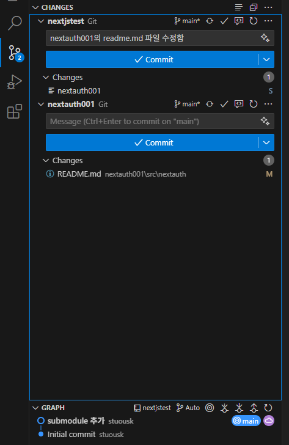
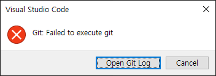

git
새 프로젝트 N을 만들면서 기존 프로젝트 O를 N 아래에 두고 싶을 때
O 프로젝트를 submodule로 선언
submodule 기능을 사용하면 된다.
N 프로젝트 루트 > git submodule add <프로젝트 O Git URL> <O를 위한 폴더 이름>
예를 들면
N 프로젝트 루트 > git submodule add https://github.com/stuo/nextauth001.git nextauth001
N 프로젝트의 루트에 .gitmodules 파일 생성된다.
[submodule "nextauth001"]
path = nextauth001
url = https://github.com/stuo/nextauth001.git
이제 commit 하면 됨.
N / O 폴더에서만 수정하고 N 폴더의 루트에서 커밋하면 N에만 반영될까 O에만 반영될까 N과 O 모두 반영될까.
이걸 알아야 submodule을 정확하게 이해하는 거임.
정답: O 프로젝트의 변경사항은 O 프로젝트에만 반영되기 때문
submodule은 O 프로젝트의 특정 커밋을 참조만 하는 거임. N 프로젝트에서 git status를 해도 O 프로젝트의 변경사항이 있다고 나타나지만
git add를 해도
PS E:\stuo\nextjstest> git status
On branch main
Your branch is up to date with 'origin/main'.
Changes not staged for commit:
(use "git add <file>..." to update what will be committed)
(use "git restore <file>..." to discard changes in working directory)
(commit or discard the untracked or modified content in submodules)
modified: nextauth001 (modified content)
no changes added to commit (use "git add" and/or "git commit -a")

vscode git extension에는 이렇게 2개의 commit 버튼이 나타난다. 위가 N 프로젝트, 아래가 O 프로젝트다.
여기서 위에 있는 N 프로젝트에 뭔가 내용을 넣고 커밋해도

이렇게 에러난다.
console에서 O 프로젝트 커밋
O 프로젝트의 루트 폴더로 가서 git add . 을 하고, git status 해 보면 잘 들어가 있는 걸 확인할 수 있다.
결국 각각 돌아가는 프로젝트 라는 걸 알 수 있다.

github에서 보면, N 프로젝트에 O 프로젝트가 이렇게 파란색으로 표시되고 클릭하면 O 프로젝트 repository로 이동한다.